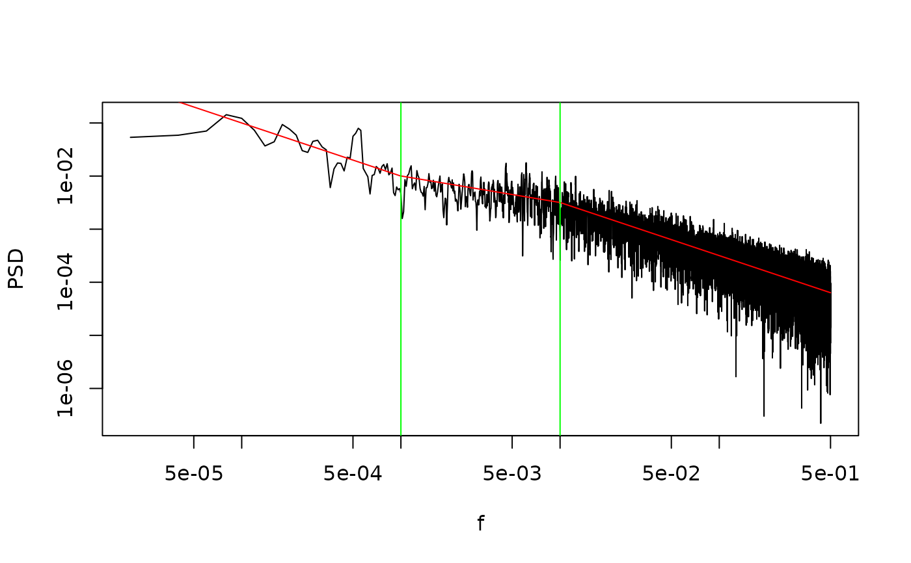

Simulate a random timeseries consistent with an arbitrary numerical power spectrum
SimFromEmpiricalSpec.RdAdapted from SimPowerlaw
See also
Other functions to generate timeseries with powerlaw like spectra:
SimPLS(),
SimPowerlaw(),
SimProxySeries()
Examples
# Create a piecewise spectrum
## helper function to generate continuous piecewise spectrum
PiecewiseLinear <- function(x, val.at.min.x, breaks, slopes){
breaks <- c(-Inf, breaks, Inf)
slp.vec <- slopes[findInterval(x, breaks)]
d.x <- diff(x)
d.y <- c(d.x * tail(slp.vec, -1))
y <- cumsum(c(val.at.min.x, d.y))
data.frame(x, y)
}
slps <- c(-1, -0.5, -1)
brks <- c(1e-03, 1e-02)
emp.spec <- PiecewiseLinear(log(seq(1/1e05, 1/2, 1/1e05)), 0, log(brks), slps)
emp.spec <- exp(emp.spec)
names(emp.spec) <- c("freq", "spec")
plot(emp.spec, type = "l", log = "xy")
# Sample consistent with spectrum
ts1 <- ts(SimFromEmpiricalSpec(emp.spec, 50000))
# re-estimate power spectrum
spec1 <- SpecMTM(ts1)
LPlot(spec1)
lines(emp.spec, col = "Red")
abline(v = brks, col = "Green")
